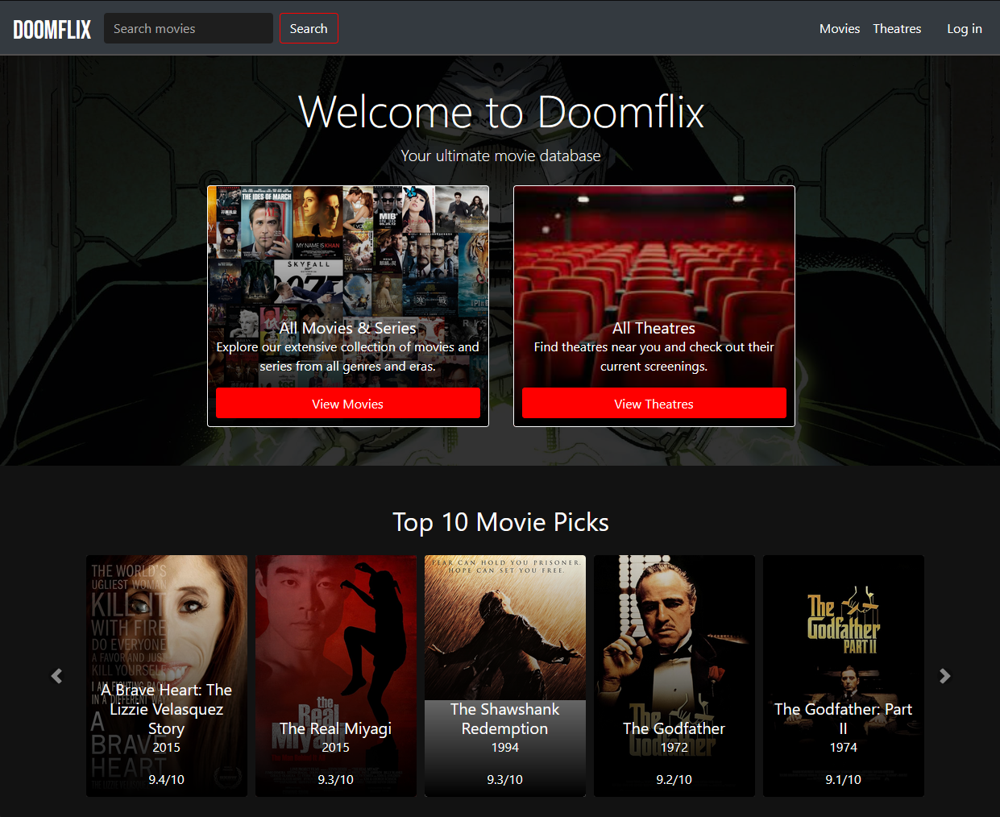

Welcome to My Profile

About Me
Hey, I'm Dev—a rebellious coder with a love for metal and a passion for equity. I’ve built a solid
foundation in C-style
languages like C, C++, and C# during my time at Abertay University, and I’m currently honing my skills
as a Junior Java
Developer at Sparta Global. I’m not your typical developer; I’m committed to DEIA and focused on
creating functional and
inclusive software. My final year project at Abertay—where I developed a Souls-like game with
accessibility
features—highlighted my belief that everyone deserves a level playing field, even in the most
challenging
environments.
When I’m not coding, you’ll find me tearing up the road on my Yamaha or Honda,
slinging spells in
Magic: The Gathering, or diving into tabletop RPGs like Vampire: The Masquerade. I’m also passionate
about mixology, so
if you ever need a perfectly crafted cocktail, I’m your guy. I’ve never followed the crowd, and that’s
reflected in my
work and worldview. I’m all about pushing boundaries—whether in my code, my music, or my life. So if
you’re looking for
a developer who challenges the status quo and brings creativity, technical prowess, and a punk-rock
attitude to the
table, let’s connect.
Downloads
Programming Languages
Java
C++
C#
Python
HTML5
CSS3
PHP
SQL
Tools & Technologies
Spring Boot
Git
Bash
GitHub Actions
JUnit
Mockito
Google Firebase
RESTful APIs
JDBC
Unity
Unreal Engine
Godot
Soft Skills
Leadership
Communication
Team Collaboration
Accessibility & Inclusive Design
Optimization
Multithreading
Debugging
Test-Driven Development (TDD)
Portfolio
R'lyeh Employee Management System

Crunchy Crew CRM (Crunchy Relationship System)

Yggdrasil World Database

Devin Colyer Spartan Profile

Doomflix Movie Website
Passions
Exploring the depths of metal, folk, and prog music, along with an eclectic mix of other genres. Whether writing, listening, or attending live shows, music is my lifeblood.
Diving into various forms of gaming, with a love for challenging titles like Dark Souls, strategic card games like Magic: The Gathering, and immersive tabletop RPGs like Vampire: The Masquerade.
Active participant in game jams, creating unique and entertaining experiences such as the 2D comedy sim "Abertay Game Jam Manager 2023"—a quirky homage to game development.
Avid reader with a taste for the speculative and the strange, enjoying works by authors like William Gibson, Kentaro Miura, Junji Ito, and H.P. Lovecraft.
Passionate motorcycle enthusiast, currently owning a Yamaha YBR125 and a sleek black-and-gold Honda CBR600. Riding is my ultimate form of freedom.
Culinary aficionado who loves crafting meals, pairing them with expertly mixed cocktails, and finishing with barista-quality coffee. Food is an art form to me.
Contact
Phone: +44(0)7763452092
Email: dcolyer@spartaglobal.com
LinkedIn GitHub
Twitter Itch.io